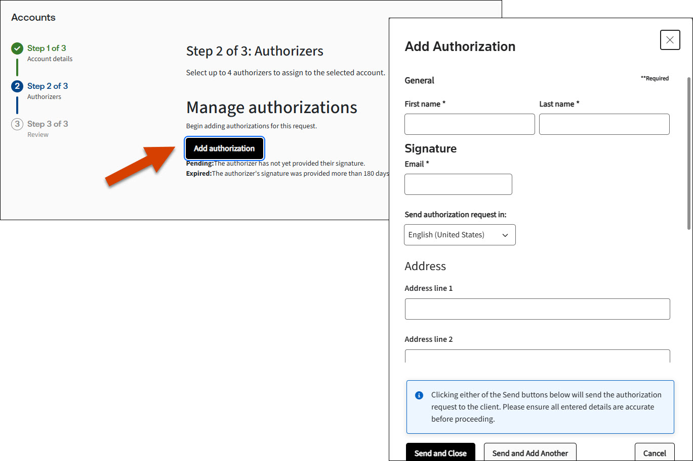
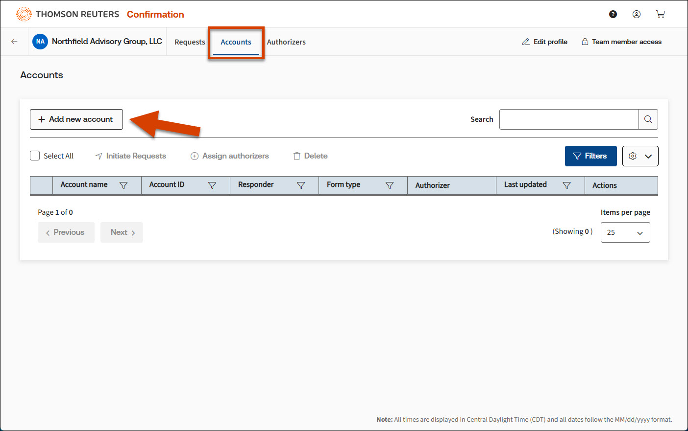
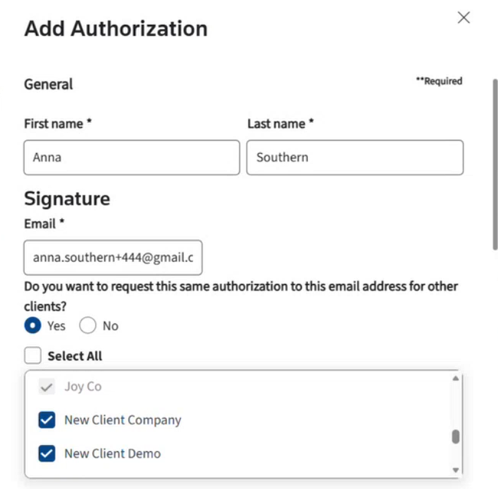
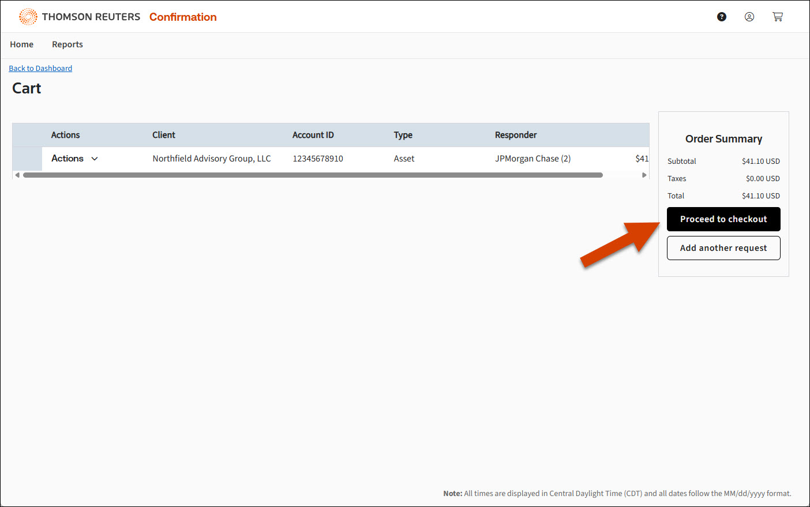
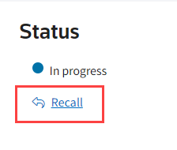
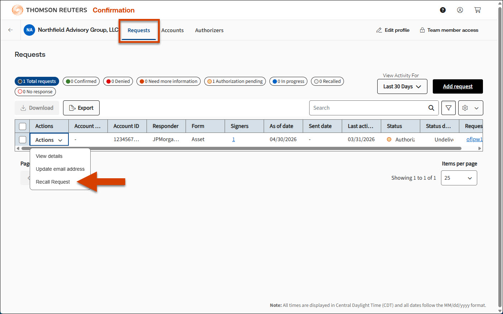

Bank confirmations
Simplify and accelerate your audit process.
Confirmation delivers automated audit confirmations with a platform that's fast, simple, and secure.
Module 01 · What is itNew
Client, auditor and bank each play a role, and Confirmation is the secure link that ties all three together. One request authorized at the source, verified evidence back in days.
Module 02 · Who needs itNew
Whether you're closing an audit, validating a balance, or verifying an asset, Confirmation gets you a trusted answer from the source.
Simplify and accelerate your audit process.
Confirmation delivers automated audit confirmations with a platform that's fast, simple, and secure.
See the full financial picture.
Access real-time account balances and transaction data to validate financial status with confidence.
Verify critical financial data.
Get a guaranteed response from in-network banks on bank references, verifications of deposit, mortgage reverifications, and government benefits eligibility (HUD).
Trusted by
Placeholder logos for mock-up only. Final firms & banks to be confirmed by TR.
Module 03 · Why get it from usNew
The difference isn't just speed. It's the network, the follow-through, and the trust that comes with every confirmation.
banks and financial institutions in the world's largest confirmation network, with a guaranteed response.
Over 8,000 in-network institutions are contracted to respond, so a request never goes unanswered.
Automated reminders and direct relationships chase every outstanding request on your behalf.
Built to keep pace with evolving audit and data-privacy requirements, so your evidence always holds up.
Source-verified, tamper-evident confirmations that stand up to review and scrutiny.
Module 04 · Why you can trust usNew
From regional firms to global networks, finance and audit professionals trust Confirmation for evidence that holds up.
A guaranteed response from the network means we stopped chasing banks entirely. The evidence just shows up, verified and ready for review.
We trust the confirmations because they come straight from the source. That's the part our reviewers care about most.
The Super Signer alone gave one of our bank reviewers his afternoons back. He used to sign each request individually, hundreds of times a week.
Module 05 · Network
No setup. No per-bank onboarding. Send a request and it lands inside a global hub built on years of pre-signed agreements with thousands of financial institutions.
Connect
pre-contracted banks & counterparties
| Capital | Shares | ✓ |
|---|---|---|
| $32,000,000 | 20,000 | ✓ |
| $72,000,000 | 45,000 | ✓ |
| $18,400,000 | 11,500 | ✓ |
Module 06 · Workflow
From the moment a request is created to the moment confirmation is returned, each step is captured, timestamped, and traceable in the same workspace.
Module 07 · Speed
Manual workflows stall waiting for emails, signatures, and follow-ups. TR Confirmation collapses that timeline into a few days, with no manual outreach in between.
Module 08 · Scale
Build a cart of requests across every client engagement, send it as one submission, and watch each confirmation come back into the same dashboard.
| Client name | Type | Status | Last update |
|---|
Module 09 · Feature
When the same officer signs across multiple clients, Super Signer groups them all into a single authorization, done with one signature for the entire batch.
Module 10 · Inside the platform
Real UI, real tasks. Every small interaction you'll do dozens of times a week, designed to disappear into the work.






Module 11 · Customers
From regional firms to global audit teams, here's what changes when the network is already wired.
Made our entire process more efficient. We used to chase signatures for weeks; now they come back inside the same day.
We sent five hundred confirmations on a Tuesday morning and were done with the rollforward by Thursday. That used to be a three-week sprint.
The Super Signer alone gave one of our bank reviewers his afternoons back. He used to sign each request individually, hundreds of times a week.
Join 1.5M+ auditors. Connect to 4,000+ banks. Get started in minutes.
Create Free Account